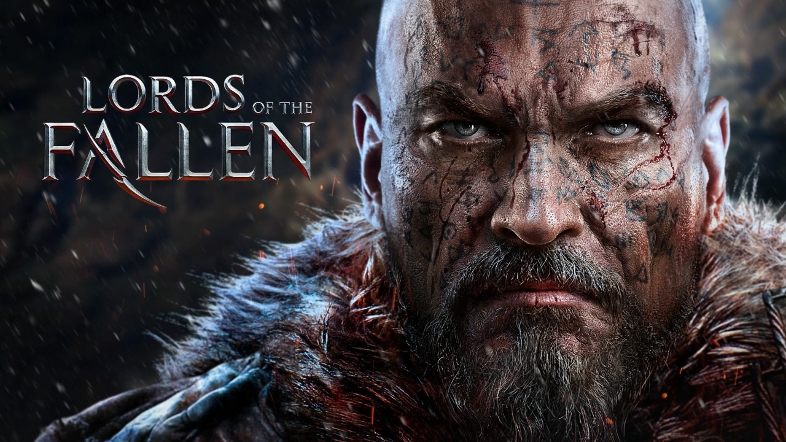

Lords of the Fallen (2014)
Ma Note
Mon Avis
De la merde en barquette, je pense que c’est le pire souls-like jamais créé, quelle horreur !
J’ai détesté le temps passé sur ce jeu, rien ne va. À éviter absolument !